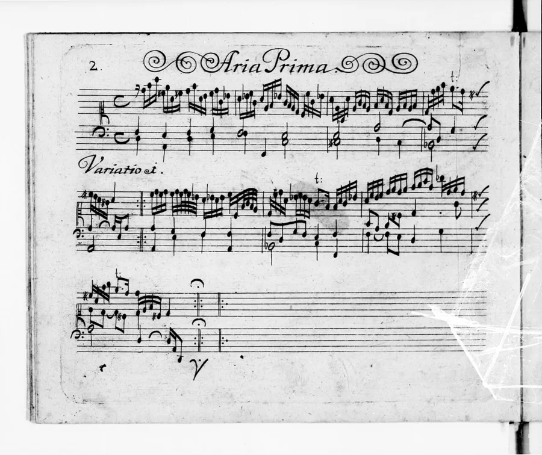

Music pioneer · Baroque · Composer arrangement studio
Johann Pachelbel
Choose the Canon, then press Play. Isolate the cello to hear the two-bar bass that repeats 28 times, or one violin at a time to follow the canon: each violin plays exactly the same music, two bars apart. Playback uses sampled or synthesized instruments; consult the linked edition for fingering, bowing, pedaling, and expressive detail.
Arranging with care
A source staff is not always the melody: in an orchestral score, find the staff carrying the theme. A two-part piano study pairs your selected voice with a source bass; it is not a concert reduction and wide leaps may need redistribution. Saxophone notation is transposed while playback stays at concert pitch. Violin parts stay at concert pitch and are moved by octaves to sit above the open G string. Guitar tab preserves pitch and rhythm but may need a different octave or fingering. Original ensembles are available only where the source contains those parts. Piano reductions and original classroom studies retain their source identities.
Recordings: Nicholaus P. Brosowsky’s Tonejs-Instruments sample collection, CC BY 3.0; VSCO 2 Community Edition, CC0. Sample credits and processing.
Music pioneer · Baroque · 1653–1706
About Johann Pachelbel

Johann Pachelbel (1653–1706) was one of the most respected organists in Germany, a teacher of the Bach family, and a master of music built on patterns. Today he is remembered for a single piece he might hardly have recognized as famous: the Canon in D.
Life and context
Pachelbel was baptized in Nuremberg on 1 September 1653, the son of a wine merchant. He studied at the university in Altdorf and the gymnasium in Regensburg, but money ran short, and he made his living as an organist instead. In 1673 he went to Vienna as deputy organist at St. Stephen’s Cathedral, where he heard the latest Catholic church music from Italy.
He then worked his way through the great organ posts of central Germany: the court at Eisenach (1677), the Predigerkirche in Erfurt (1678–1690), Stuttgart, and Gotha. In Eisenach he became a friend of the Bach family. He was godfather to Johann Sebastian Bach’s sister and taught J. S. Bach’s eldest brother, Johann Christoph, who in turn taught the young Sebastian. A line runs from Pachelbel’s organ bench to Bach’s.
In 1695 he came home to Nuremberg as organist of St. Sebaldus Church, where he stayed until his death in March 1706. He wrote hundreds of organ chorales and fugues, sacred vocal works, and the keyboard variations of Hexachordum Apollinis (1699).
The Canon was written for three violins and basso continuo, probably for a private occasion, and we do not know when. Its only early source is a manuscript copied long after his death. It was first published in 1919 and became a worldwide hit only after a 1968 recording by Jean-François Paillard’s chamber orchestra. Since then it has been used at countless weddings and borrowed by pop songwriters, because its eight-chord pattern fits almost any melody.
Johann Pachelbel: a timeline
- Baptized in Nuremberg on 1 September.
- Deputy organist at St. Stephen’s Cathedral, Vienna.
- Court organist in Eisenach, where he befriends the Bach family.
- Organist of the Predigerkirche in Erfurt for twelve years; teaches Johann Christoph Bach.
- Returns to Nuremberg as organist of St. Sebaldus Church.
- Publishes the keyboard variations Hexachordum Apollinis.
- Dies in Nuremberg in March.
- The Canon and Gigue in D are first published.
- Jean-François Paillard’s recording makes the Canon world-famous.
Ground bass and canon
A ground bass is a short bass line that repeats over and over while the music above it changes. In the Canon, the cello plays the same eight notes (D, A, B, F♯, G, D, G, A) 28 times.
A canon is a round: one voice starts a melody and others enter later with exactly the same notes. Violin II plays what Violin I played two bars earlier, and Violin III follows two bars after that. Because every phrase fits the same eight chords, the three violins always agree.
Music pioneer · Baroque
Sound experiment: ground bass and canon
Version A plays a short tune once. Version B plays it over a repeating bass. Does the repeating bass make the tune feel more settled or more restless?
This is an original classroom demonstration of a musical idea, not an excerpt or recording of the composer’s work.
Choose a version, then press Play.
Guided listening
Choose a performance of one of these works. Listen once for its overall character, then again for the detail in the prompt.
- Canon in D: count how many times you hear the cello’s eight-note pattern before the violins become very busy.
- Gigue in D (the Canon’s companion): listen for the same three violins chasing each other in a fast dance.
- Hexachordum Apollinis, Aria Sebaldina: hear Pachelbel vary one melody over an unchanging harmony on the keyboard.
Practice and reflection
- Use the Source staff menu to choose the cello. Sing or play its eight notes. Where does the pattern start again?
- Play Violin I alone for bars 3–6, then Violin II for bars 5–8. What do you notice?
- Write your own four-bar melody that fits the first two bars of the bass. Could it become a canon if a partner started two beats later?
Check your listening
The cello repeats an eight-note pattern every two bars. Violin II copies Violin I exactly, two bars later, and Violin III two bars after that. That is why the piece is called a canon. A useful answer names a feature you can hear and explains its effect. More than one interpretation is possible.
Use the heart | save pill to keep these notes in this browser, or copy them before leaving.